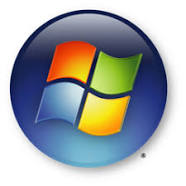

Windows
Windows es el nombre de una familia de distribuciones de software para PC, teléfonos inteligentes, servidores y sistemas empotrados, desarrollados y vendidos por Microsoft y disponibles para múltiples arquitecturas, tales como x86, x86-64 y ARM.
Desde un punto de vista técnico, no son sistemas operativos, sino que contienen uno (tradicionalmente MS-DOS, o el más actual cuyo núcleo es Windows NT) junto con una amplia variedad de software; no obstante, es usual (aunque no necesariamente correcto) denominar al conjunto como sistema operativo en lugar de distribución. Microsoft introdujo un entorno operativo denominado Windows el 20 de noviembre de 1985 como un complemento para MS-DOS en respuesta al creciente interés en las interfaces gráficas de usuario (GUI).2 Microsoft Windows llegó a dominar el mercado mundial de computadoras personales, con más del 90 % de la cuota de mercado, superando a Mac OS, que había sido introducido en 1984.
La versión más reciente de Windows es Windows 10 para equipos de escritorio, Windows Server 2019 para servidores y Windows 10 Mobile para dispositivos móviles. La primera versión en español fue Windows 2.1.
La primera versión se lanzó en 1985 y comenzó a utilizarse de forma generalizada gracias a su interfaz gráfica de usuario (GUI, Graphical User Interface) basada en ventanas. Hasta ese momento (y hasta mucho después como corazón de Windows), el sistema operativo más extendido era MS-DOS (Microsoft Disk Operating System), que por aquel entonces contaba con una interfaz basada en línea de comandos.
El 30 de septiembre de 2014, Microsoft presentó Windows 10, que está disponible desde ese día a usuarios avanzados que se suscribieran al programa Insider. Esta nueva versión del sistema operativo que llegó de forma oficial y gratuita a usuarios con licencia genuina de Windows 7, Windows 8 y Windows 8.1 así como a Insiders el 29 de julio de 2015, es la primera versión que busca la unificación de dispositivos (escritorio, portátiles, teléfonos inteligentes, tabletas y videoconsolas) bajo una experiencia común, con lo que se espera eliminar algunos problemas que se presentaron con Windows 8.1.
GNU/Linux
GNU/Linux es la denominación técnica y generalizada que reciben una serie de sistemas operativos de tipo Unix, que también son multiplataforma, multiusuario y multitarea.1 Estos sistemas operativos están formados mediante la combinación de varios proyectos, entre los cuales destaca el entorno GNU, encabezado por el programador estadounidense Richard Stallman junto a la Free Software Foundation, una fundación cuyo propósito es difundir el software libre, así como también el núcleo de sistema operativo conocido como «Linux», encabezado por el programador finlandés Linus Torvalds.2
El desarrollo de estos sistemas operativos es uno de los ejemplos más prominentes de software libre: todo su código fuente puede ser utilizado, modificado y redistribuido libremente por cualquier persona, empresa o institución, bajo los términos de la Licencia Pública General de GNU, así como de otra serie de licencias, si se desea.3 La idea de desarrollar un sistema operativo libre y basado en el sistema operativo Unix, se remonta a mediados de la década de 1980 con el proyecto GNU.
A pesar de que en la jerga cotidiana la mayoría de las personas usan el vocablo «Linux» para referirse a este sistema operativo,45 en realidad ese es solo el nombre del kernel o núcleo, ya que el sistema completo está formado también por una gran cantidad de componentes del proyecto GNU, que van desde compiladores hasta entornos de escritorio.6
Sin embargo, tras publicar Torvalds su núcleo Linux en 1991 y ser este usado junto al software del proyecto GNU, una parte significativa de los medios generales y especializados han utilizado el término «Linux» para referirse a estos sistemas operativos completos.7 Cabe señalar que, existen derivados de sistemas operativos que usan el núcleo Linux, pero que no tienen componentes GNU, como por ejemplo el sistema operativo Android,8 así como distribuciones de software GNU donde el núcleo Linux está ausente, como por ejemplo el sistema operativo FreeBSD, que es un sistema operativo basado en Unix, que usa un micronúcleo de sistema operativo junto a algunas aplicaciones del proyecto GNU.9
Los sistemas operativos GNU/Linux, se encuentran normalmente en forma de compendios conocidos como distribuciones o distros,10 a las cuales se les han añadido selecciones de aplicaciones y programas, con las cuales el sistema cuenta directamente al ser instalado, así como una amplia serie de programas que pueden descargarse desde un repositorio, que consiste en un almacén de software, para su posterior instalación. El propósito de estas distribuciones es ofrecer GNU/Linux como un producto final que el usuario pueda instalar en su computadora para que funcione como su sistema operativo principal, o también en un software de simulación virtual de computadora, cumpliendo con toda una serie de necesidades básicas para un grupo determinado de usuarios, o para el público general.
Algunas de estas distribuciones son especialmente conocidas por su uso en servidores de Internet, supercomputadoras, y sistemas embebidos;11 donde GNU/Linux tiene la cuota más importante de esos mercados. Según un informe de IDC, GNU/Linux es utilizado por el 78% de los principales 500 servidores del mundo.12 Por otro lado, el proyecto de ranking de computadoras Top500.org informa, en su lista de noviembre de 2017, que las 500 supercomputadoras más potentes del mundo utilizan todas ellas alguna distribución del sistema operativo GNU/Linux.13 Con menor participación, el sistema GNU/Linux también se usa en el segmento de las computadoras de escritorio, portátiles, dispositivos móviles, computadoras de bolsillo, videoconsolas y otros.
Ubuntu
Ubuntu (pronunciado /ʊˈbʊntuː/; estilizado como ubuntu) es un sistema operativo de software libre y código abierto. Es una distribución de Linux basada en Debian. Actualmente corre en computadores de escritorio y servidores. Está orientado al usuario promedio, con un fuerte enfoque en la facilidad de uso y en mejorar la experiencia del usuario. Está compuesto de múltiple software normalmente distribuido bajo una licencia libre o de código abierto. Estadísticas web sugieren que la cuota de mercado de Ubuntu dentro de las distribuciones Linux es, aproximadamente, del 52 %,34 y con una tendencia a aumentar como servidor web.5
Su patrocinador, Canonical, es una compañía británica propiedad del empresario sudafricano Mark Shuttleworth. Ofrece el sistema de manera gratuita, y se financia por medio de servicios vinculados al sistema operativo67 y vendiendo soporte técnico.8 Además, al mantenerlo libre y gratuito, la empresa es capaz de aprovechar los desarrolladores de la comunidad para mejorar los componentes de su sistema operativo. Extraoficialmente, la comunidad de desarrolladores proporciona soporte para otras derivaciones de Ubuntu, con otros entornos gráficos, como Kubuntu, Xubuntu, Ubuntu MATE, Edubuntu, Ubuntu Studio, Mythbuntu, Ubuntu GNOME y Lubuntu.9
Canonical, además de mantener Ubuntu, provee una versión orientada a servidores, Ubuntu Server, una versión para empresas, Ubuntu Business Desktop Remix, una para televisores, Ubuntu TV, otra versión para tabletas Ubuntu Tablet,10 también Ubuntu Phone11 y una para usar el escritorio desde teléfonos inteligentes, Ubuntu for Android.121314
Cada seis meses se publica una nueva versión de Ubuntu. Esta recibe soporte por parte de Canonical durante nueve meses por medio de actualizaciones de seguridad, parches para bugs críticos y actualizaciones menores de programas. Las versiones LTS (Long Term Support), que se liberan cada dos años,15 reciben soporte durante cinco años en los sistemas de escritorio y de servidor.16
Android
Android es un sistema operativo móvil desarrollado por Google, basado en Kernel de Linux y otros software de código abierto. Fue diseñado para dispositivos móviles con pantalla táctil, como teléfonos inteligentes, tabletas, relojes inteligentes (Wear OS), automóviles (Android Auto) y televisores (Android TV).
Inicialmente fue desarrollado por Android Inc., empresa que Google respaldó económicamente y que adquirió en 2005.3 Android fue presentado en 2007 junto con la fundación del Open Handset Alliance (un consorcio de compañías de hardware, software y telecomunicaciones) para avanzar en los estándares abiertos de los dispositivos móviles.4 El código fuente principal de Android se conoce como Android Open Source Project (AOSP), que se licencia principalmente bajo la Licencia Apache.5 Android es el sistema operativo móvil más utilizado del mundo, con una cuota de mercado superior al 80 % al año 2017, muy por encima de IOS.6789
Según los documentos secretos filtrados en 2013 y 2014, el sistema operativo es uno de los objetivos de las agencias de inteligencia internacionales.